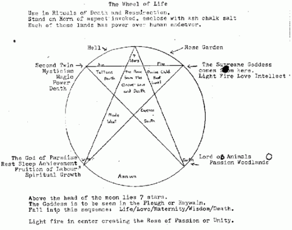

March 1966 Letter to Norman Gills March 1966
Dear Norman,
Thank you for your letter which I
read with very great interest. I take it that you write in symbols, and
your descriptions of Two Kings, and Two Queens are purely symbolic, since
we have something very similar in my own branch of the Craft.
I was worried of the outburst of
symbols. My own conclusion is that you were probably still suffering from
the after affects of nightshade wine, but even so I didn't want to push
the issue at that point. You should really be careful, since all dream
drugs can have a very dangerous side as well as a marvelous sensational
side. There is a place in the other world (if place is the right way to
describe it) which is literally chaos, and can destroy the human mind. In
the past they had very careful directions and sign posts to help the
congregation over the difficult way. Today much of those directions have
been lost.
I read your remarks upon
the practices you follow with interest, and perceive in them a
conglomeration of various ideas that are not strictly of the Faith I know.
The animals you speak of I do possess a very considerable knowledge about,
and I can assure you that a rat, as distinct from a mouse is the last
shape to be assumed by Long Compton, any more than an alder rod would be
used in a ritual devoted to the Mother of the Waters. Trees, like animals
have a use and a meaning - and combined with a maze pattern of the right
sort and understanding, form a series of compound images that produce
necessary effects, and lead us into the place in the otherworld where we
may gain wisdom. Taliesin was too fond of relying upon Toad, and the
Taniast have lost because of this. Glorious dreams may be valid, but
unless they have a reason for 'becoming', they are of little use except in
convincing the devotee of the beauty or horror locked away in his own
unconscious.
We have been pretty
busy recently, organizing a magical group along the Seven and One basis,
as opposed to the old rural Twelve and One. The Clan seem to be
responding, and our ancestors are appearing to give their approval, that
is the only approval that counts for us. The Hallows of the Covenant went
off all right, had to cover up somethings since strangers were present,
but we got through a few results. Sorry about not bringing you along, but
since it was already overbalanced with outsiders, there was not very much
else we could do. We could not have helped you under those circumstances
at all. The summoning of the Hound and the Raven had to be done
symbolically as it was, and there were only four of us who knew what we
were about. Still one of the outsiders said she had a vision of the Old
Queen, and Old Tubal was definitly there. Not a bad night out all in all.
We have been experimenting with the
balanite and ash, and find that even without certain aids, it works
remarkably well combined with a witches cradle. As far as we can see, it
has two effects. One is the activating of the power in a human body, and
the other is moving a center of power from one point to another. The thing
that did strike us as interesting was that even without the cone of power
being present from the ring, it works as an activator. It evidently
affects the nerve and mind power that has it's center just over the front
of the head. The Indians call this a "Chakra", and it is supposed to
spiral either left or right according to the sex. In sick people it looks
like a closed flower, and in a psychic it looks like a vortex moving
round. I have felt and seen this effect at times, so it is true I think.
Now from what we gather, when you move the cleft stick down, it also
affects the other centers on the body, such as the one just under the
heart and above the sexual organs. In other words, it is a far more
advanced method than that used by the ceremonial magicians who do all this
by breathing.
Presumably combined
with a witches cradle, it helps the spirit to leave the body, anyway this
is what we did with it. Also working in a ring, once the power has been
raised, it joins the directional power of the Maid or Master to the power
of the group, and since the Maid has been instructed to go in a certain
direction, the whole group will follow and anything that happens must be
shared by the group. It is very interesting.
Now the idea of using it over
water, bound to a wet tree such as a willow is interesting also, since it
is forming a perfect link for the power to flow from heaven to earth, or
earth to heaven according to which way the ring is being turned. As you
already know, power must form a complete chain otherwise it will not work,
since "witch" magic is like "witch" Gods, it is from the highest to the
lowest, from the lowest to the highest. All is One, and one is all.
Thank you Norman for teaching us so
much.
Obviously, I cannot leave the
matter like that, so here is a piece of knowledge that will help you, and
which will explain about the Castles and Kingdoms. I have enclosed it, and
I hope you will understand it, since it is really a map of the other
worlds, you are welcome to use our names, or use the ones that you know
personally. But I will guarantee that this works, if it is combined with
things that both you and I know, but will not write down .... cords ....
smoke .... tapers ... etc, etc. When the time comes pass this, and the
other things which we have discussed, on to Mr. Wilson, whom I am afraid I
will not see.
Flags,
Flax and Fodder,
/S/Roy

Herewith is the basic structure of the Craft .....
In the beginning there was only Night, and She was alone. Being
was absolute, movement was there none. Being force without form, She
desired form, and since She desired, that form was created .. Woman.
Being Woman, She desired union, and created Man from Her North side.
Having created Man, She discovered love, and so all things
began. Here was the first of all sins, Desire. From desire sprang all
movement, all Life, all Time, all Death, joy and sorrow alike.
From the Gods came seven children, who created seven worlds to
rule over, and they formed a halo about the Great Gods as seven stars.
They also created Earth, Air, Fire and Water, and gave these lands to
four of the seven Gods. These Gods each live in a separate land bounded
by the great Gulf of Annwn, which is the land of Chaos, and unredeemed
souls.
The lands of the Gods are then:
A Castle surrounded by Fire that lies upon the East, ruled
over by Lucet (The divine Child). The Supreme Goddess comes from here.
A Castle under the depths of the Sea, laying towards the West,
ruled over by Node.
A Castle in the Clouds laying towards the
North, ruled over by Tettens.
A Castle builded upon the Earth
and surrounded by trees, laying towards the South, ruled over by
Carenos. To each of these rulers was given a wife, that
sprang also from the love of the Gods. Each of these lands had power
over human endeavour.
Lucet is the King of Light, Fire, Love and
Intellect, of Birth and Joy....The Child. He is visualized as a bright
golden light moving quickly, with wings. Thieving and mischievious.
Sometimes he comes as a tall golden man, moving rapidly, other times the
wings of Fire surround him, but few can face that vision without aid
from an even Higher Source. At times he is winged at the foot; at others
upon the head, behind the glorious hair.)
For Thy Kingdom is past not away
Nor Thy Power from
the place hurled.
Out of Heaven they shall not cast the day
They shall not cast out song from the world.
By the song and
the light they give
We know Thy works that they live
With the
gift Thou hast given us of speech
We praise, we adore, we beseech
We arise at Thy bidding and follow
We cry to Thee, answer,
appear
Oh Father of us all Paian Appollo
Destroyer and Healer
hear!

In the North lies the Castle of Weeping, the ruler
thereof is named Tettens, our Hermes or Woden. He is the second twin,
the waning sun, Lord over mysticism, magic, power and death, the Baleful
destroyer. The God of War, of Justice, King of Kings, since all pay
their homage to Him. Ruler of the Winds, the Windyat. Cain imprisoned in
the Moon, ever desiring Earth. He is visualized as a tall dark man,
shadowy, cold and deadly. Unpredictable, yet capable of great nobility,
since he represents Truth. He is the God of magicians and witches, who
knows all sorcery. Lord of the North, dark, unpredictable, the true God
of all witches and magicians if they are working at any decent level at
all. A cold wind surrounds Him, age and time so ancient that it is
beyond belief flows from Him. Dark is His shadow, and he bears a branch
of the sorrowing alder, and walks with the aid of a blackthorn stick.
Sorrow is printed upon His face, yet also joy. He guards, as a rider
upon an eight-legged horse, the approaches to the Castle of Night. He is
also the Champion of the glass bridge after the Silver Forest. Cold is
tho air as he passes by. Some say tall and dark, I say small and dark,
speaking in a faint voice which is as clear as ice.
(Lucet and
Tettens are the Twins, the Children of Night and the Serpent, brothers
and some say one and the same person. Fire and Air, growth and decay.
One looks forward, the other backward. One creates, the other destroys,
Castor and Pollox.)
In the South lies the Castle of Life. The
ruler is named Carenos, He is the Lord of animals, of joy and of
passion. Ruler of the woodlands, a wild hunter, yet the God of
happiness, fruition, fertility, equivalent to the young Dionysus. Shown
as a horned figure, with curling rams horns. He is the God of the
fertility cultus, and everything about Him is connected with life,
growth and strength.
In the West lies perhaps the most complex,
and the greatest figure of them all. The God of Paradise, Node. He is
the God of Rest, Sleep, Achievement, fruition of labour, spiritual
growth. He is also noble, ever fighting against evil, and is equivalent
to King Arthur. He is also the God of the Sea. He should be seen as a
mature man, with golden light playing from Him, and a lion at His feet.
Eyes that are wise and sad. He is the King of all true wisdom.
These four Kings are the reversed pentacle, thus [hexagram] and
the fifth ray is turned into six points, or three and three, which in
part represents Old Tubal Cain, or the All Father Himself. Hearne.
Above the head of the Moon, as shewn in the diagram lies five
(seven) other stars, known as the Goddesses, that is they are to be seen
in The Plough or Haywain. They fall into this sequence: Life, Love,
Maternity, Wisdom, and Death. Since I maintain that knowledge is
understood more fully if one has to work for it, I leave you to fit your
own interpretation upon the five (seven) Stars, and how they fit as
Queens within the Castles. By looking at the diagrams of both the Moat
and the Mill, it is possible to see how they become Queens, and also why
in ancient mythology, why the Queen was always considered to play a
harlot, or fallen woman. In other words, by the juxtaposition of King
and Queens, it is possible to work out a magical formula concerned with
(a) aspects within the Mask, as one would use a Qabbalistic tree, and
(b) an insight into the control of the four basic elements.
It
was considered in the past that Man could help the Gods, as the Gods
helped Man. In fact, you will find that in many fairy stories, they deal
with this matter allegorically. It is from these and many similar
stories, i.e. Sir Gawain and the Hollen Bush; Tristam and Isobel;
Launcelot and Geneveve, and others that a pattern of magical myth and
legend may be woven, often with surprising results and effects. To
effect a magical ritual of this nature, one enacts it with various
implements and tools that have the same symbolic meaning as the Gods
involved.
It was from these unions between Gods and man, that
the art of magic began. To those who have eyes, ears and a heart that is
pure. These deepest secrets are written upon the clouds, in the bark of
trees, in the movement of water, and in the heart of fire. The genuine
mysteries are open to all to see and rediscover. There is no secrecy
surrounding them. There is a great river flowing and twining round all
creation. Rushing out of Annwn, binding the seven kingdoms together, and
returning to Annwn in a great waterfall, under which all must pass
eventually. The name of that river is Time and the place of Darkness to
which it returns is not only Hell, but Heaven also. It is time and time
alone that binds us to blindness, and it is love and love alone that
will let us see the golden heart of the mysteries.
|